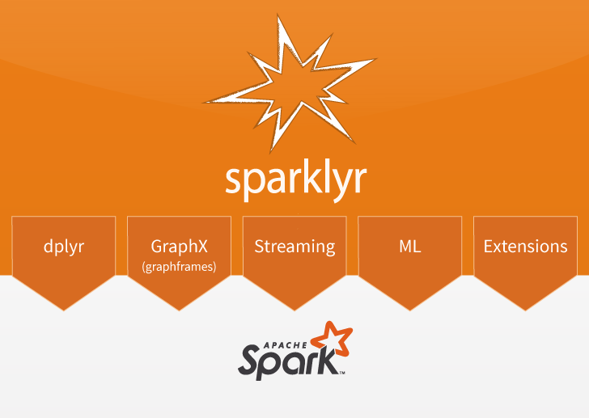
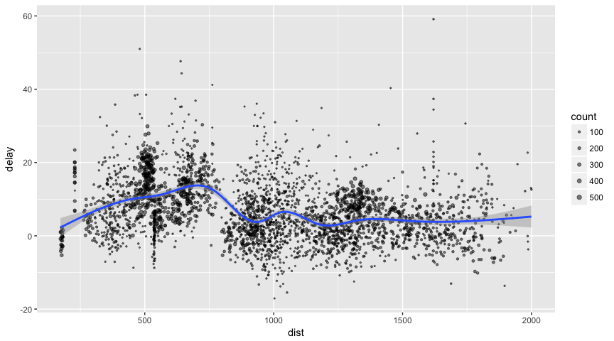
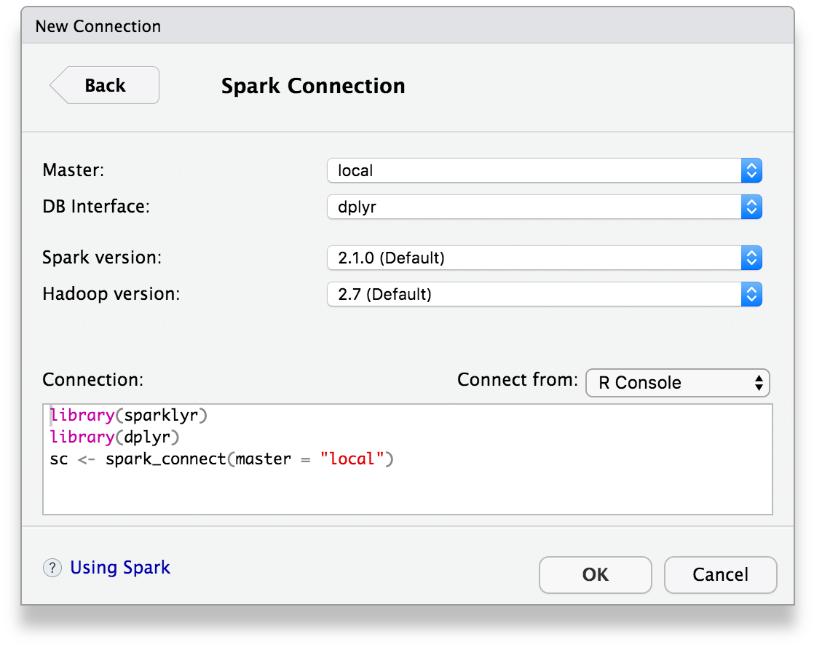
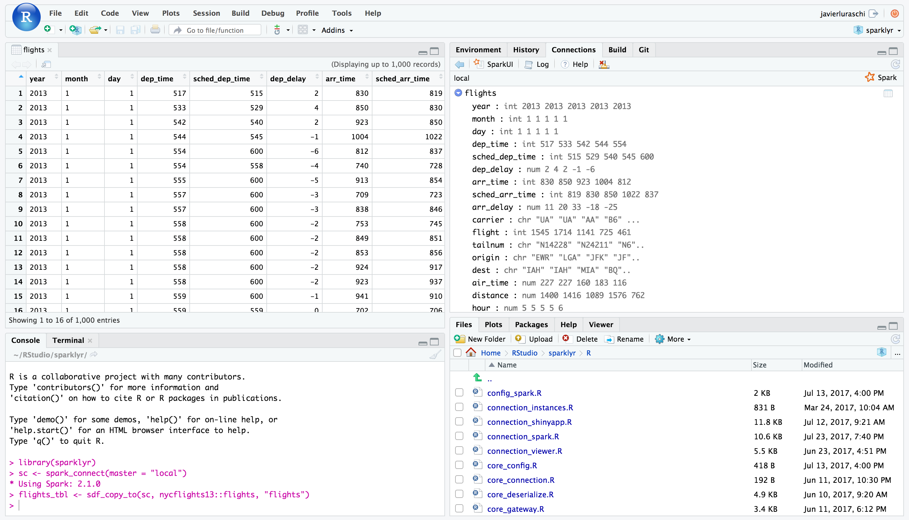
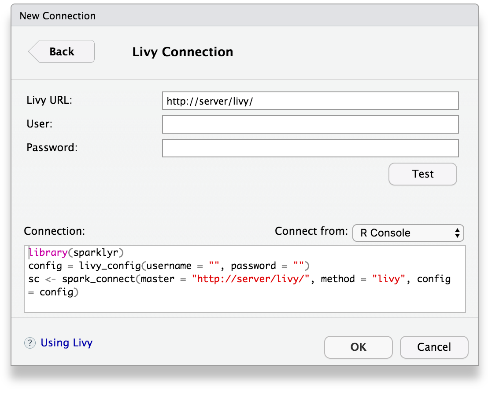

sparklyr: R interface for Apache Spark



- Connect to Spark from R. The sparklyr package provides a
complete dplyr backend. - Filter and aggregate Spark datasets then bring them into R for
analysis and visualization. - Use Spark’s distributed machine learning library from R.
- Create extensions that call the full Spark API and provide
interfaces to Spark packages.
Installation
You can install the sparklyr package from CRAN as follows:
install.packages("sparklyr")You should also install a local version of Spark for development purposes:
library(sparklyr)
spark_install(version = "2.1.0")To upgrade to the latest version of sparklyr, run the following command and restart your r session:
devtools::install_github("rstudio/sparklyr")If you use the RStudio IDE, you should also download the latest preview release of the IDE which includes several enhancements for interacting with Spark (see the RStudio IDE section below for more details).
Connecting to Spark
You can connect to both local instances of Spark as well as remote Spark clusters. Here we’ll connect to a local instance of Spark via the spark_connect function:
library(sparklyr)
sc <- spark_connect(master = "local")The returned Spark connection (sc) provides a remote dplyr data source to the Spark cluster.
For more information on connecting to remote Spark clusters see the Deployment section of the sparklyr website.
Using dplyr
We can now use all of the available dplyr verbs against the tables within the cluster.
We’ll start by copying some datasets from R into the Spark cluster (note that you may need to install the nycflights13 and Lahman packages in order to execute this code):
install.packages(c("nycflights13", "Lahman"))
library(dplyr)
iris_tbl <- copy_to(sc, iris)
flights_tbl <- copy_to(sc, nycflights13::flights, "flights")
batting_tbl <- copy_to(sc, Lahman::Batting, "batting")
dplyr::src_tbls(sc)## [1] "batting" "flights" "iris"To start with here’s a simple filtering example:
## # Source: lazy query [?? x 19]
## # Database: spark_connection
## year month day dep_time sched_dep_time dep_delay arr_time
## <int> <int> <int> <int> <int> <dbl> <int>
## 1 2013 1 1 517 515 2 830
## 2 2013 1 1 542 540 2 923
## 3 2013 1 1 702 700 2 1058
## 4 2013 1 1 715 713 2 911
## 5 2013 1 1 752 750 2 1025
## 6 2013 1 1 917 915 2 1206
## 7 2013 1 1 932 930 2 1219
## 8 2013 1 1 1028 1026 2 1350
## 9 2013 1 1 1042 1040 2 1325
## 10 2013 1 1 1231 1229 2 1523
## # ... with more rows, and 12 more variables: sched_arr_time <int>,
## # arr_delay <dbl>, carrier <chr>, flight <int>, tailnum <chr>,
## # origin <chr>, dest <chr>, air_time <dbl>, distance <dbl>, hour <dbl>,
## # minute <dbl>, time_hour <dbl>Introduction to dplyr provides additional dplyr examples you can try. For example, consider the last example from the tutorial which plots data on flight delays:
delay <- flights_tbl %>%
group_by(tailnum) %>%
summarise(count = n(), dist = mean(distance), delay = mean(arr_delay)) %>%
filter(count > 20, dist < 2000, !is.na(delay)) %>%
collect
# plot delays
library(ggplot2)
ggplot(delay, aes(dist, delay)) +
geom_point(aes(size = count), alpha = 1/2) +
geom_smooth() +
scale_size_area(max_size = 2)## `geom_smooth()` using method = 'gam'
Window Functions
dplyr window functions are also supported, for example:
batting_tbl %>%
select(playerID, yearID, teamID, G, AB:H) %>%
arrange(playerID, yearID, teamID) %>%
group_by(playerID) %>%
filter(min_rank(desc(H)) <= 2 & H > 0)## # Source: lazy query [?? x 7]
## # Database: spark_connection
## # Groups: playerID
## # Ordered by: playerID, yearID, teamID
## playerID yearID teamID G AB R H
## <chr> <int> <chr> <int> <int> <int> <int>
## 1 aaronha01 1959 ML1 154 629 116 223
## 2 aaronha01 1963 ML1 161 631 121 201
## 3 abbotji01 1999 MIL 20 21 0 2
## 4 abnersh01 1992 CHA 97 208 21 58
## 5 abnersh01 1990 SDN 91 184 17 45
## 6 acklefr01 1963 CHA 2 5 0 1
## 7 acklefr01 1964 CHA 3 1 0 1
## 8 adamecr01 2016 COL 121 225 25 49
## 9 adamecr01 2015 COL 26 53 4 13
## 10 adamsac01 1943 NY1 70 32 3 4
## # ... with more rowsFor additional documentation on using dplyr with Spark see the dplyr section of the sparklyr website.
Using SQL
It’s also possible to execute SQL queries directly against tables within a Spark cluster. The spark_connection object implements a DBI interface for Spark, so you can use dbGetQuery to execute SQL and return the result as an R data frame:
library(DBI)
iris_preview <- dbGetQuery(sc, "SELECT * FROM iris LIMIT 10")
iris_preview## Sepal_Length Sepal_Width Petal_Length Petal_Width Species
## 1 5.1 3.5 1.4 0.2 setosa
## 2 4.9 3.0 1.4 0.2 setosa
## 3 4.7 3.2 1.3 0.2 setosa
## 4 4.6 3.1 1.5 0.2 setosa
## 5 5.0 3.6 1.4 0.2 setosa
## 6 5.4 3.9 1.7 0.4 setosa
## 7 4.6 3.4 1.4 0.3 setosa
## 8 5.0 3.4 1.5 0.2 setosa
## 9 4.4 2.9 1.4 0.2 setosa
## 10 4.9 3.1 1.5 0.1 setosaMachine Learning
You can orchestrate machine learning algorithms in a Spark cluster via the machine learning functions within sparklyr. These functions connect to a set of high-level APIs built on top of DataFrames that help you create and tune machine learning workflows.
Here’s an example where we use ml_linear_regression to fit a linear regression model. We’ll use the built-in mtcars dataset, and see if we can predict a car’s fuel consumption (mpg) based on its weight (wt), and the number of cylinders the engine contains (cyl). We’ll assume in each case that the relationship between mpg and each of our features is linear.
# copy mtcars into spark
mtcars_tbl <- copy_to(sc, mtcars)
# transform our data set, and then partition into 'training', 'test'
partitions <- mtcars_tbl %>%
filter(hp >= 100) %>%
mutate(cyl8 = cyl == 8) %>%
sdf_partition(training = 0.5, test = 0.5, seed = 1099)
# fit a linear model to the training dataset
fit <- partitions$training %>%
ml_linear_regression(response = "mpg", features = c("wt", "cyl"))
fit## Call: ml_linear_regression.tbl_spark(., response = "mpg", features = c("wt", "cyl"))
##
## Formula: mpg ~ wt + cyl
##
## Coefficients:
## (Intercept) wt cyl
## 33.499452 -2.818463 -0.923187For linear regression models produced by Spark, we can use summary() to learn a bit more about the quality of our fit, and the statistical significance of each of our predictors.
summary(fit)## Call: ml_linear_regression.tbl_spark(., response = "mpg", features = c("wt", "cyl"))
##
## Deviance Residuals:
## Min 1Q Median 3Q Max
## -1.752 -1.134 -0.499 1.296 2.282
##
## Coefficients:
## (Intercept) wt cyl
## 33.499452 -2.818463 -0.923187
##
## R-Squared: 0.8274
## Root Mean Squared Error: 1.422Spark machine learning supports a wide array of algorithms and feature transformations and as illustrated above it’s easy to chain these functions together with dplyr pipelines. To learn more see the machine learning section.
Reading and Writing Data
You can read and write data in CSV, JSON, and Parquet formats. Data can be stored in HDFS, S3, or on the local filesystem of cluster nodes.
temp_csv <- tempfile(fileext = ".csv")
temp_parquet <- tempfile(fileext = ".parquet")
temp_json <- tempfile(fileext = ".json")
spark_write_csv(iris_tbl, temp_csv)
iris_csv_tbl <- spark_read_csv(sc, "iris_csv", temp_csv)
spark_write_parquet(iris_tbl, temp_parquet)
iris_parquet_tbl <- spark_read_parquet(sc, "iris_parquet", temp_parquet)
spark_write_json(iris_tbl, temp_json)
iris_json_tbl <- spark_read_json(sc, "iris_json", temp_json)
dplyr::src_tbls(sc)## [1] "batting" "flights" "iris" "iris_csv"
## [5] "iris_json" "iris_parquet" "mtcars"Distributed R
You can execute arbitrary r code across your cluster using spark_apply. For example, we can apply rgamma over iris as follows:
spark_apply(iris_tbl, function(data) {
data[1:4] + rgamma(1,2)
})## # Source: table<sparklyr_tmp_115c74acb6510> [?? x 4]
## # Database: spark_connection
## Sepal_Length Sepal_Width Petal_Length Petal_Width
## <dbl> <dbl> <dbl> <dbl>
## 1 5.336757 3.736757 1.636757 0.4367573
## 2 5.136757 3.236757 1.636757 0.4367573
## 3 4.936757 3.436757 1.536757 0.4367573
## 4 4.836757 3.336757 1.736757 0.4367573
## 5 5.236757 3.836757 1.636757 0.4367573
## 6 5.636757 4.136757 1.936757 0.6367573
## 7 4.836757 3.636757 1.636757 0.5367573
## 8 5.236757 3.636757 1.736757 0.4367573
## 9 4.636757 3.136757 1.636757 0.4367573
## 10 5.136757 3.336757 1.736757 0.3367573
## # ... with more rowsYou can also group by columns to perform an operation over each group of rows and make use of any package within the closure:
spark_apply(
iris_tbl,
function(e) broom::tidy(lm(Petal_Width ~ Petal_Length, e)),
names = c("term", "estimate", "std.error", "statistic", "p.value"),
group_by = "Species"
)## # Source: table<sparklyr_tmp_115c73965f30> [?? x 6]
## # Database: spark_connection
## Species term estimate std.error statistic p.value
## <chr> <chr> <dbl> <dbl> <dbl> <dbl>
## 1 versicolor (Intercept) -0.08428835 0.16070140 -0.5245029 6.023428e-01
## 2 versicolor Petal_Length 0.33105360 0.03750041 8.8279995 1.271916e-11
## 3 virginica (Intercept) 1.13603130 0.37936622 2.9945505 4.336312e-03
## 4 virginica Petal_Length 0.16029696 0.06800119 2.3572668 2.253577e-02
## 5 setosa (Intercept) -0.04822033 0.12164115 -0.3964146 6.935561e-01
## 6 setosa Petal_Length 0.20124509 0.08263253 2.4354220 1.863892e-02Extensions
The facilities used internally by sparklyr for its dplyr and machine learning interfaces are available to extension packages. Since Spark is a general purpose cluster computing system there are many potential applications for extensions (e.g. interfaces to custom machine learning pipelines, interfaces to 3rd party Spark packages, etc.).
Here’s a simple example that wraps a Spark text file line counting function with an R function:
# write a CSV
tempfile <- tempfile(fileext = ".csv")
write.csv(nycflights13::flights, tempfile, row.names = FALSE, na = "")
# define an R interface to Spark line counting
count_lines <- function(sc, path) {
spark_context(sc) %>%
invoke("textFile", path, 1L) %>%
invoke("count")
}
# call spark to count the lines of the CSV
count_lines(sc, tempfile)## [1] 336777To learn more about creating extensions see the Extensions section of the sparklyr website.
Table Utilities
You can cache a table into memory with:
tbl_cache(sc, "batting")and unload from memory using:
tbl_uncache(sc, "batting")Connection Utilities
You can view the Spark web console using the spark_web function:
spark_web(sc)You can show the log using the spark_log function:
spark_log(sc, n = 10)## 17/11/09 15:55:18 INFO DAGScheduler: Submitting 1 missing tasks from ResultStage 69 (/var/folders/fz/v6wfsg2x1fb1rw4f6r0x4jwm0000gn/T//RtmpyR8oP9/file115c74b94924.csv MapPartitionsRDD[258] at textFile at NativeMethodAccessorImpl.java:0) (first 15 tasks are for partitions Vector(0))
## 17/11/09 15:55:18 INFO TaskSchedulerImpl: Adding task set 69.0 with 1 tasks
## 17/11/09 15:55:18 INFO TaskSetManager: Starting task 0.0 in stage 69.0 (TID 140, localhost, executor driver, partition 0, PROCESS_LOCAL, 4904 bytes)
## 17/11/09 15:55:18 INFO Executor: Running task 0.0 in stage 69.0 (TID 140)
## 17/11/09 15:55:18 INFO HadoopRDD: Input split: file:/var/folders/fz/v6wfsg2x1fb1rw4f6r0x4jwm0000gn/T/RtmpyR8oP9/file115c74b94924.csv:0+33313106
## 17/11/09 15:55:18 INFO Executor: Finished task 0.0 in stage 69.0 (TID 140). 832 bytes result sent to driver
## 17/11/09 15:55:18 INFO TaskSetManager: Finished task 0.0 in stage 69.0 (TID 140) in 126 ms on localhost (executor driver) (1/1)
## 17/11/09 15:55:18 INFO TaskSchedulerImpl: Removed TaskSet 69.0, whose tasks have all completed, from pool
## 17/11/09 15:55:18 INFO DAGScheduler: ResultStage 69 (count at NativeMethodAccessorImpl.java:0) finished in 0.126 s
## 17/11/09 15:55:18 INFO DAGScheduler: Job 47 finished: count at NativeMethodAccessorImpl.java:0, took 0.131380 sFinally, we disconnect from Spark:
spark_disconnect(sc)RStudio IDE
The latest RStudio Preview Release of the RStudio IDE includes integrated support for Spark and the sparklyr package, including tools for:
- Creating and managing Spark connections
- Browsing the tables and columns of Spark DataFrames
- Previewing the first 1,000 rows of Spark DataFrames
Once you’ve installed the sparklyr package, you should find a new Spark pane within the IDE. This pane includes a New Connection dialog which can be used to make connections to local or remote Spark instances:

Once you’ve connected to Spark you’ll be able to browse the tables contained within the Spark cluster and preview Spark DataFrames using the standard RStudio data viewer:

You can also connect to Spark through Livy through a new connection dialog:

The RStudio IDE features for sparklyr are available now as part of the RStudio Preview Release.
Using H2O
rsparkling is a CRAN package from H2O that extends sparklyr to provide an interface into Sparkling Water. For instance, the following example installs, configures and runs h2o.glm:
options(rsparkling.sparklingwater.version = "2.1.14")
library(rsparkling)
library(sparklyr)
library(dplyr)
library(h2o)
sc <- spark_connect(master = "local", version = "2.1.0")
mtcars_tbl <- copy_to(sc, mtcars, "mtcars")
mtcars_h2o <- as_h2o_frame(sc, mtcars_tbl, strict_version_check = FALSE)
mtcars_glm <- h2o.glm(x = c("wt", "cyl"),
y = "mpg",
training_frame = mtcars_h2o,
lambda_search = TRUE)
mtcars_glm## Model Details:
## ==============
##
## H2ORegressionModel: glm
## Model ID: GLM_model_R_1510271749678_1
## GLM Model: summary
## family link regularization
## 1 gaussian identity Elastic Net (alpha = 0.5, lambda = 0.1013 )
## lambda_search
## 1 nlambda = 100, lambda.max = 10.132, lambda.min = 0.1013, lambda.1se = -1.0
## number_of_predictors_total number_of_active_predictors
## 1 2 2
## number_of_iterations training_frame
## 1 100 frame_rdd_29_b907d4915799eac74fb1ea60ad594bbf
##
## Coefficients: glm coefficients
## names coefficients standardized_coefficients
## 1 Intercept 38.941654 20.090625
## 2 cyl -1.468783 -2.623132
## 3 wt -3.034558 -2.969186
##
## H2ORegressionMetrics: glm
## ** Reported on training data. **
##
## MSE: 6.017684
## RMSE: 2.453097
## MAE: 1.940985
## RMSLE: 0.1114801
## Mean Residual Deviance : 6.017684
## R^2 : 0.8289895
## Null Deviance :1126.047
## Null D.o.F. :31
## Residual Deviance :192.5659
## Residual D.o.F. :29
## AIC :156.2425
spark_disconnect(sc)Connecting through Livy
Livy enables remote connections to Apache Spark clusters. Before connecting to Livy, you will need the connection information to an existing service running Livy. Otherwise, to test livy in your local environment, you can install it and run it locally as follows:
To connect, use the Livy service address as master and method = "livy" in spark_connect. Once connection completes, use sparklyr as usual, for instance:
sc <- spark_connect(master = "http://localhost:8998", method = "livy")
copy_to(sc, iris)## # Source: table<iris> [?? x 5]
## # Database: spark_connection
## Sepal_Length Sepal_Width Petal_Length Petal_Width Species
## <dbl> <dbl> <dbl> <dbl> <chr>
## 1 5.1 3.5 1.4 0.2 setosa
## 2 4.9 3.0 1.4 0.2 setosa
## 3 4.7 3.2 1.3 0.2 setosa
## 4 4.6 3.1 1.5 0.2 setosa
## 5 5.0 3.6 1.4 0.2 setosa
## 6 5.4 3.9 1.7 0.4 setosa
## 7 4.6 3.4 1.4 0.3 setosa
## 8 5.0 3.4 1.5 0.2 setosa
## 9 4.4 2.9 1.4 0.2 setosa
## 10 4.9 3.1 1.5 0.1 setosa
## # ... with more rows
spark_disconnect(sc)Once you are done using livy locally, you should stop this service with:
To connect to remote livy clusters that support basic authentication connect as:
config <- livy_config(username="<username>", password="<password">)
sc <- spark_connect(master = "<address>", method = "livy", config = config)
spark_disconnect(sc)